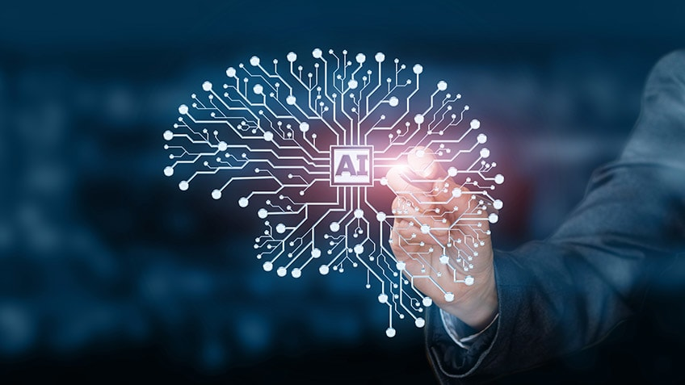

artificial intelligence advantages

Advantages and Disadvantages of Artificial Intelligence
By Nikita Duggal
Last updated on Mar 28, 202111297
Advantages and Disadvantages of Artificial Intelligence
With all the hype around AI - robots, self-driving cars, etc. - it can be easy to assume that AI doesn’t impact our everyday lives. In reality, most of us encounter AI in some way or the other almost every single day. From the moment you wake up to check your smartphone to watching another Netflix recommended movie, AI has quickly made its way into our everyday lives. According to a study by Statista, the global AI market is set to grow up to 54 percent every single year. But what exactly is AI? Will it really serve good to mankind in the future? Well, there are tons of advantages and disadvantages of AI which we’ll discuss in this article.
Advantages of Artificial Intelligence
- 1.Reduction in Human Error
:
One of the biggest advantages of AI is that it can significantly reduce errors and increase accuracy and precision. The decisions taken by AI in every step is decided by information previously gathered and a certain set of algorithms. When programmed properly, these errors can be reduced to null.
- 2. Zero Risks
:Another big advantage of AI is that humans can overcome many risks by letting AI robots do them for us. Whether it be defusing a bomb, going to space, exploring the deepest parts of oceans, machines with metal bodies are resistant in nature and can survive unfriendly atmospheres. Moreover, they can provide accurate work with greater responsibility and not wear out easily.
- 3. 24x7 Availability
:There are many studies that show humans are productive only about 3 to 4 hours in a day. Humans also need breaks and time offs to balance their work life and personal life. But AI can work endlessly without breaks. They think much faster than humans and perform multiple tasks at a time with accurate results. They can even handle tedious repetitive jobs easily with the help of AI algorithms.
- 4. Digital Assistance
:Almost all the big organizations these days use digital assistants to interact with their customers which significantly minimizes the need for human resources. You can chat with a chatbot and ask them exactly what you need. Some chatbots have become so intelligent these days that you wouldn’t be able to determine whether you are chatting with a chatbot or a human being.
- 5. New Inventions
:AI has helped in coming up with new inventions in almost every domain to solve complex problems. A recent invention has helped doctors to predict early stages of breast cancer in women using advanced AI-based technologies.
- 6. Unbiased Decisions
:Human beings are driven by emotions, whether we like it or not. AI on the other hand, is devoid of emotions and highly practical and rational in its approach. A huge advantage of Artificial Intelligence is that it doesn't have any biased views, which ensures more accurate decision-making.